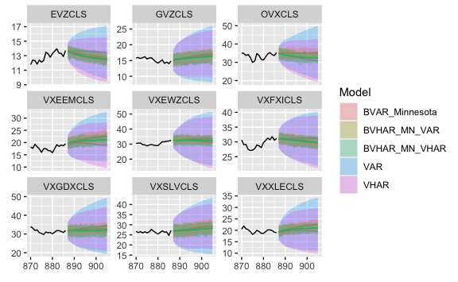

Overview
bvhar provides functions to analyze multivariate time series time series using
- VAR
- VHAR (Vector HAR)
- BVAR (Bayesian VAR)
- BVHAR (Bayesian VHAR)
Basically, the package focuses on the research with forecasting.
Installation
install.packages("bvhar")Development version
You can install the development version from this repository.
# install.packages("pak")
pak::pak("ygeunkim/bvhar")Models
Repeatedly, bvhar is a research tool to analyze multivariate time series model above
| Model | function | class |
|---|---|---|
| VAR | var_lm() |
varlse |
| VHAR | vhar_lm() |
vharlse |
| BVAR | bvar_minnesota() |
bvarmn |
| BVHAR | bvhar_minnesota() |
bvharmn |
This readme document shows forecasting procedure briefly. Details about each function are in vignettes and help documents.
h-step ahead forecasting:
h <- 19
etf_split <- divide_ts(etf_vix, h) # Try ?divide_ts
etf_tr <- etf_split$train
etf_te <- etf_split$testVAR
VAR(5):
mod_var <- var_lm(y = etf_tr, p = 5)Forecasting:
forecast_var <- predict(mod_var, h)MSE:
(msevar <- mse(forecast_var, etf_te))
#> GVZCLS OVXCLS VXFXICLS VXEEMCLS VXSLVCLS EVZCLS VXXLECLS VXGDXCLS
#> 5.381 14.689 2.838 9.451 10.078 0.654 22.436 9.992
#> VXEWZCLS
#> 10.647BVAR
Minnesota prior:
lam <- .3
delta <- rep(1, ncol(etf_vix)) # litterman
sig <- apply(etf_tr, 2, sd)
eps <- 1e-04
(bvar_spec <- set_bvar(sig, lam, delta, eps))
#> Model Specification for BVAR
#>
#> Parameters: Coefficent matrice and Covariance matrix
#> Prior: Minnesota
#> # Type '?bvar_minnesota' in the console for some help.
#> ========================================================
#>
#> Setting for 'sigma':
#> GVZCLS OVXCLS VXFXICLS VXEEMCLS VXSLVCLS EVZCLS VXXLECLS VXGDXCLS
#> 3.77 10.63 3.81 4.39 5.99 2.27 4.88 7.45
#> VXEWZCLS
#> 7.03
#>
#> Setting for 'lambda':
#> [1] 0.3
#>
#> Setting for 'delta':
#> [1] 1 1 1 1 1 1 1 1 1
#>
#> Setting for 'eps':
#> [1] 1e-04
mod_bvar <- bvar_minnesota(y = etf_tr, p = 5, bayes_spec = bvar_spec)MSE:
BVHAR
BVHAR-S:
(bvhar_spec_v1 <- set_bvhar(sig, lam, delta, eps))
#> Model Specification for BVHAR
#>
#> Parameters: Coefficent matrice and Covariance matrix
#> Prior: MN_VAR
#> # Type '?bvhar_minnesota' in the console for some help.
#> ========================================================
#>
#> Setting for 'sigma':
#> GVZCLS OVXCLS VXFXICLS VXEEMCLS VXSLVCLS EVZCLS VXXLECLS VXGDXCLS
#> 3.77 10.63 3.81 4.39 5.99 2.27 4.88 7.45
#> VXEWZCLS
#> 7.03
#>
#> Setting for 'lambda':
#> [1] 0.3
#>
#> Setting for 'delta':
#> [1] 1 1 1 1 1 1 1 1 1
#>
#> Setting for 'eps':
#> [1] 1e-04
mod_bvhar_v1 <- bvhar_minnesota(y = etf_tr, bayes_spec = bvhar_spec_v1)MSE:
forecast_bvhar_v1 <- predict(mod_bvhar_v1, h)
(msebvhar_v1 <- mse(forecast_bvhar_v1, etf_te))
#> GVZCLS OVXCLS VXFXICLS VXEEMCLS VXSLVCLS EVZCLS VXXLECLS VXGDXCLS
#> 3.58 4.76 1.32 5.71 6.29 1.15 14.03 2.52
#> VXEWZCLS
#> 5.41BVHAR-L:
day <- rep(.1, ncol(etf_vix))
week <- rep(.1, ncol(etf_vix))
month <- rep(.1, ncol(etf_vix))
#----------------------------------
(bvhar_spec_v2 <- set_weight_bvhar(sig, lam, eps, day, week, month))
#> Model Specification for BVHAR
#>
#> Parameters: Coefficent matrice and Covariance matrix
#> Prior: MN_VHAR
#> # Type '?bvhar_minnesota' in the console for some help.
#> ========================================================
#>
#> Setting for 'sigma':
#> GVZCLS OVXCLS VXFXICLS VXEEMCLS VXSLVCLS EVZCLS VXXLECLS VXGDXCLS
#> 3.77 10.63 3.81 4.39 5.99 2.27 4.88 7.45
#> VXEWZCLS
#> 7.03
#>
#> Setting for 'lambda':
#> [1] 0.3
#>
#> Setting for 'eps':
#> [1] 1e-04
#>
#> Setting for 'daily':
#> [1] 0.1 0.1 0.1 0.1 0.1 0.1 0.1 0.1 0.1
#>
#> Setting for 'weekly':
#> [1] 0.1 0.1 0.1 0.1 0.1 0.1 0.1 0.1 0.1
#>
#> Setting for 'monthly':
#> [1] 0.1 0.1 0.1 0.1 0.1 0.1 0.1 0.1 0.1
mod_bvhar_v2 <- bvhar_minnesota(y = etf_tr, bayes_spec = bvhar_spec_v2)MSE:
Plots
autoplot(forecast_var, x_cut = 870, ci_alpha = .7, type = "wrap") +
autolayer(forecast_vhar, ci_alpha = .6) +
autolayer(forecast_bvar, ci_alpha = .4) +
autolayer(forecast_bvhar_v1, ci_alpha = .2) +
autolayer(forecast_bvhar_v2, ci_alpha = .1)
Code of Conduct
Please note that the bvhar project is released with a Contributor Code of Conduct. By contributing to this project, you agree to abide by its terms.